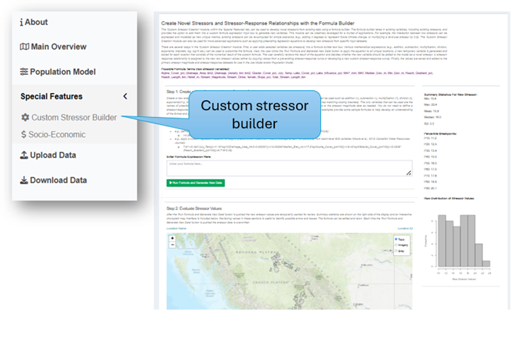
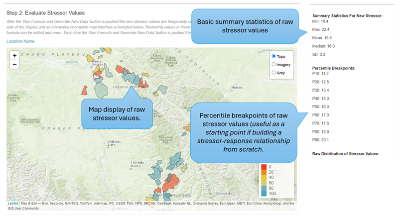
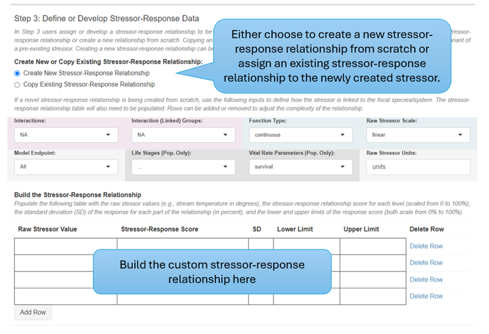
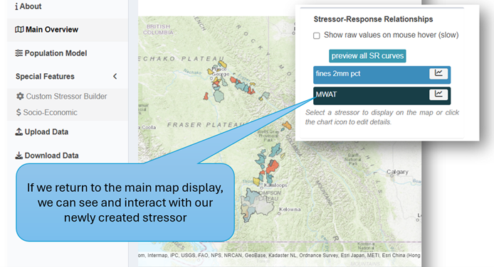

Appendix C — The Formula Builder
C.1 Creating Novel Stressors and Stressor-Response Relationships with the Formula Builder
The ‘Custom Stressor Creation’ module, within the ‘Special Features’ tab, can be used to develop novel stressors from existing data using a formula builder. The formula builder takes in existing variables, including existing stressors, and provides the option to add them into a custom formula expression input box to generate new variables. This module can be creatively leveraged for a myriad of applications. For example, the interaction between two stressors can be expressed and modelled as a new unique metric, existing stressors can be re-computed for simple scenarios (e.g., adding 2 degrees to represent future climate change, or multiplying a land-use stressor by 0.8). The ‘Custom Stressor Creation’ module can also be used for more advanced applications such as applying preexisting regression equations to develop new stressors from specific input datasets where prior research has already developed detailed SR functions that are not expressed as simple univariate relationships.

There are several steps in the ‘Custom Stressor Creation’ module. First, a user adds selected variables (as stressors) into a formula builder input text box. Various mathematical expressions (e.g., addition, subtraction, multiplication, division, exponents, brackets, log, log10 etc.) can be used to customize the formula. Next, the user clicks the ‘Run Formula and Generate New Data’ button to apply the equation to all unique locations. A new temporary variable is generated and stored for each location that consists of the numerical result of the custom formula. The user carefully reviews the result of the equation to make an informed decision whether the new variable should be added to the model as a novel stressor. A stressor-response relationship is assigned to the new raw stressor values (either by copying values from a pre-existing stressor-response curve or developing a new custom stressor-response curve). Finally, the values are saved and added to the primary stressor magnitude and stressor-response datasets for use in the Joe Model and/or Population Model. Note that if the custom formula is treated as a stand-alone stressor response function, then the new raw stressor values generated by the function can be treated directly as the predicted habitat or system capacity, rather than treated as a stressor to which a stressor-response function is applied. Alternatively, an identity stressor-response function (straight line with a slope of 1) can be chosen as the new custom stressor-response curve to treat the formula output as a direct metric of habitat capacity.
C.1.1 Step 1: Create a New Stressor with the Formula Builder
Create a new stressor by entering a custom formula in the formula expression input textbox. Various mathematical expressions can be used such as addition (+), subtraction (-), multiplication (*), division (/), exponents (x^y), brackets ((x)), log (e.g., log(x)), sqrt (e.g., sqrt(x)), log10 etc. Be careful to ensure that your formula is valid (e.g., has matching closing brackets). The only variables that can be used are the names of preexisting stressors in the stressor magnitude input workbook. Make sure the spelling is exact. Add custom metrics to the stressor magnitude data as needed. You do not need to define a stressor-response relationship for any custom habitat metrics that may exist only in the stressor-magnitude workbook for the purposes of formulating the new stressor. The following examples provide some sample formulas to help develop an understanding of the format and possibilities:
- Apply a function to estimate the habitat capacity (N) of a target species (e.g., cutthroat trout) by taking the cumulative product of habitat unit area summaries (e.g., m² of pool habitat in a stream) and estimates of the hypothetical max parr density per habitat unit type [e.g., 0.16 parr/m²]:
(stream_area_pool*0.16)+(stream_area_glide*0.04)+(stream_area_riffle*0.01)
- Apply a simple fixed increase or decrease in the raw value of a stressor (e.g., fines):
Fines_pct*0.8Fines_pct-10
- Define a possible interactive effect between stream temperature and peak flows (example from Wenger et al., 2011: PNAS):
(-0.59*Temp)+((-0.88*Temp)^2)+(-0.20*PeakFlows)
- Apply a custom regression equation to roughly predict MWAT (Maximum Weekly Average Stream Temperature) from basin-level GIS variables (Moore et al., 2013: Canadian Water Resources Journal):
7.91+(0.484*July_Temp)+(1.18*log10(Drainage_Area_km2+0.000001))+(-0.00306*Median_Elev_m)+(17.5*sqrt(Lake_Cover_pct/100))+(-9.43*sqrt(Glacier_Cover_pct/100))+(0.0529*(Reach_Gradient_pct/100))-(0.719*0.25)
When ready, click the green ‘Run Formula and Generate New Data’ button to apply the equation across all locations and create a new temporary stressor metric (based on the result of applying the equation to stressor magnitude data from each location).

C.1.2 Step 2: Evaluate Stressor Values
After the ‘Run Formula and Generate New Data’ button is pushed the new stressor values are temporarily cached for review. Summary statistics are shown on the right side of the display, and an interactive choropleth map interface is included below. Reviewing values in these sections is useful to identify possible errors and issues with formula entry or other bugs (i.e., users should evaluate whether predicted values are consistent with expectations based on the original source of the formula). The formula can be edited and rerun. Each time the ‘Run Formula and Generate New Data’ button is pushed the stressor data is overwritten.
At this stage, if users are treating the formula entered into the formula builder as a direct predictor of habitat or system capacity (i.e., a stand-alone stressor-response function), then the values can be directly saved and visualized as a direct measure of system capacity with no further transformation. This step then becomes the endpoint for data analysis. Users also have the option of treating the saved values as a composite stressor, and applying a stressor-response function to them as per the normal CEMPRA workflow, as described below.

C.1.3 Step 3: Define or Develop Stressor-Response Data
In Step 3 users assign or develop a stressor-response relationship to be associated with the newly created stressor metric. Users may either copy an existing stressor-response relationship or create a new relationship from scratch. Copying an existing relationship can be useful if the newly created stressor represents a scenario or variant of a pre-existing stressor. Creating a new stressor-response relationship can be useful if the newly created stressor requires an entirely new relationship. Note that an alternative way to directly transform the new stressor to predicted habitat capacity scaled from 0-1 is to set the stressor-response function to a straight line with a slope of 1, which will function as an identity relationship.
If a novel stressor-response relationship is being created from scratch, use the following inputs to define how the stressor is linked to the focal species/system. The stressor-response relationship table will also need to be populated. Rows can be added or removed to adjust the complexity of the relationship.

Populate the following table with the raw stressor values (e.g., stream temperature in degrees), the stressor-response relationship score for each level (scaled from 0 to 100%), the standard deviation (SD) of the response for each part of the relationship (in percent), and the lower and upper limits of the response score (both scale from 0% to 100%).
C.1.4 Step 4: Save New Stressor to Global Dataset
Finally, in Step 4, we take our newly created stressor and stressor-response relationship and add it to the stressor-magnitude and stressor-response datasets for use in the Joe and Population Model, as well as other components of the tool. After the ‘Add Stressor and Stressor-Response Relationship to Model’ button is pressed the entire application will update itself to include the newly created stressor. It is important to assign a clear and unique name to the new stressor. Do not use spaces or special characters.

Leave questions and comments below (via your GitHub account)